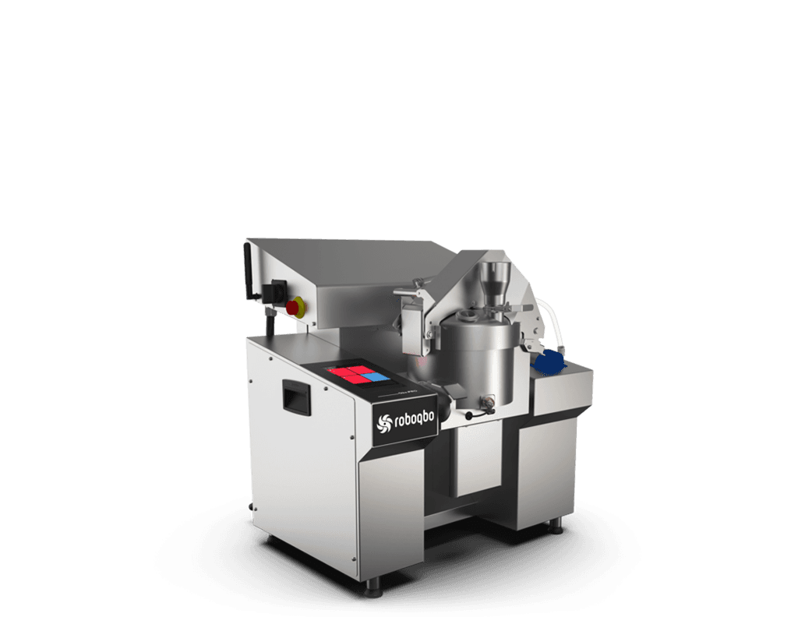
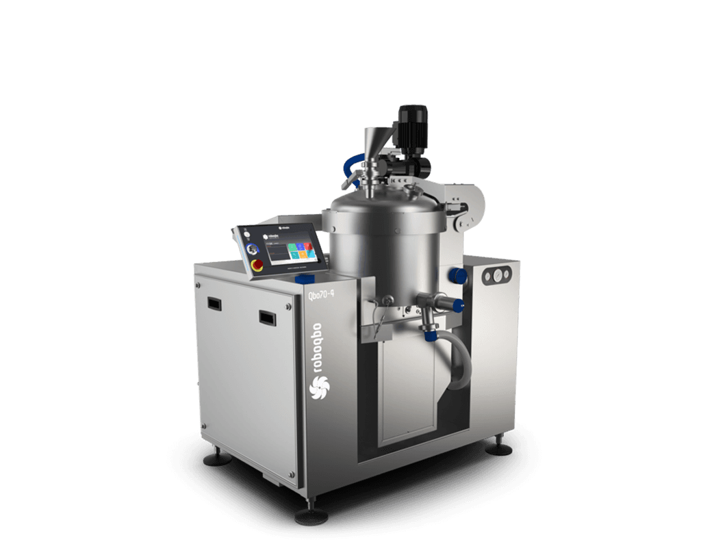
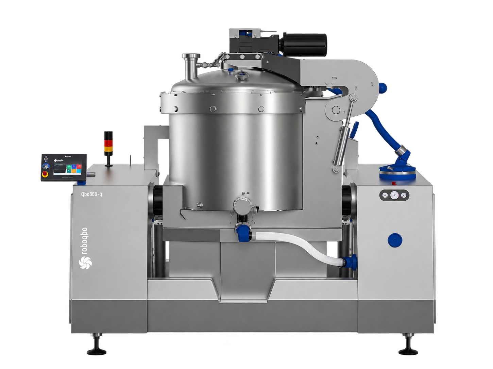
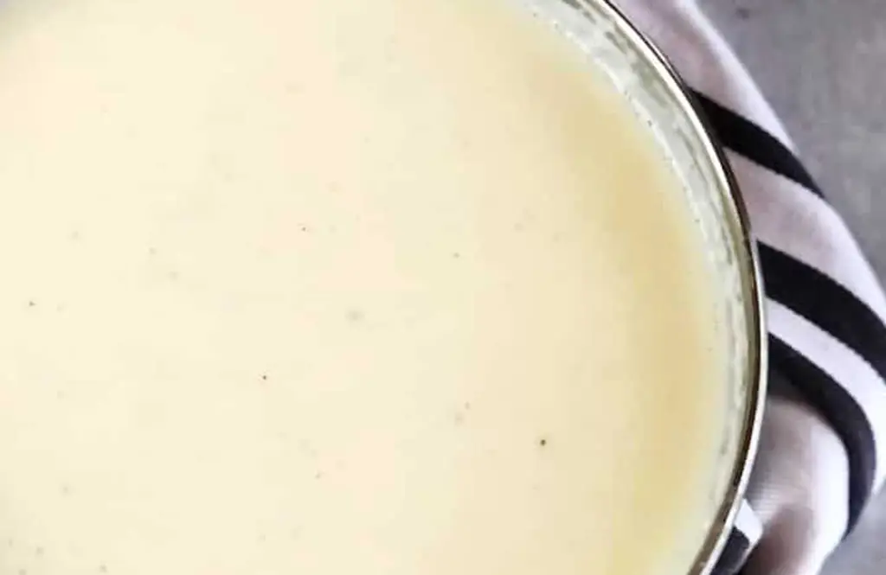
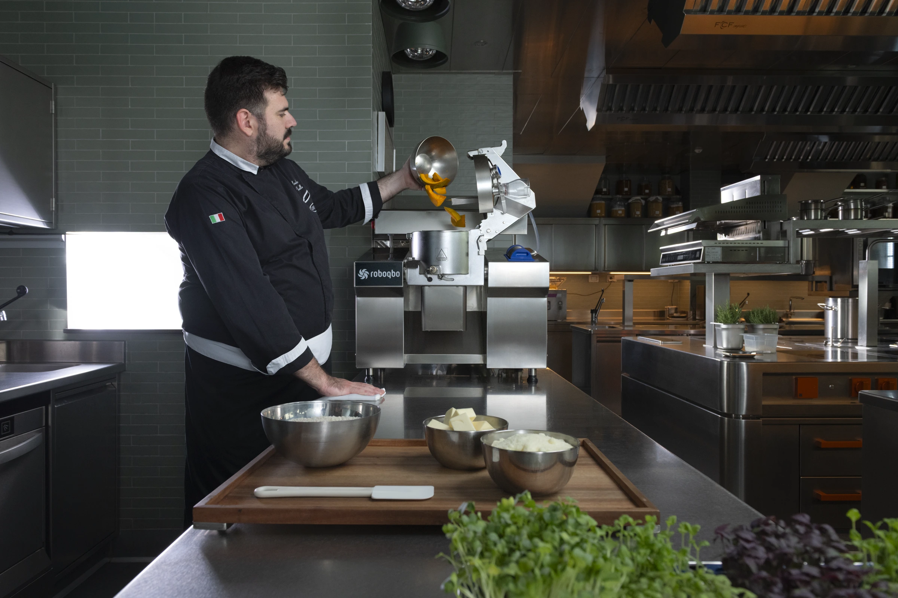
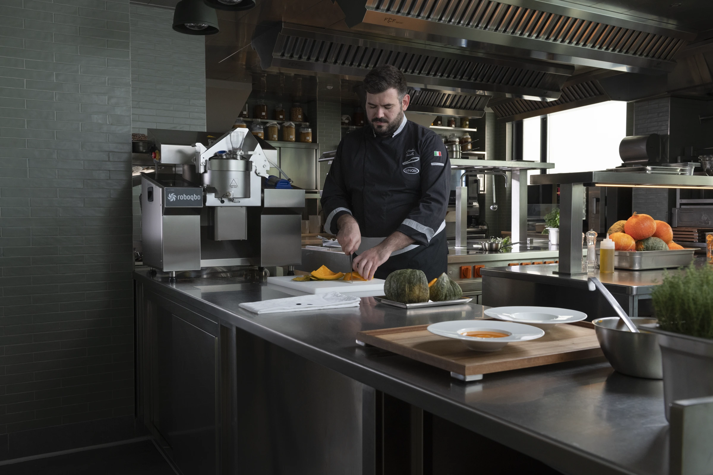
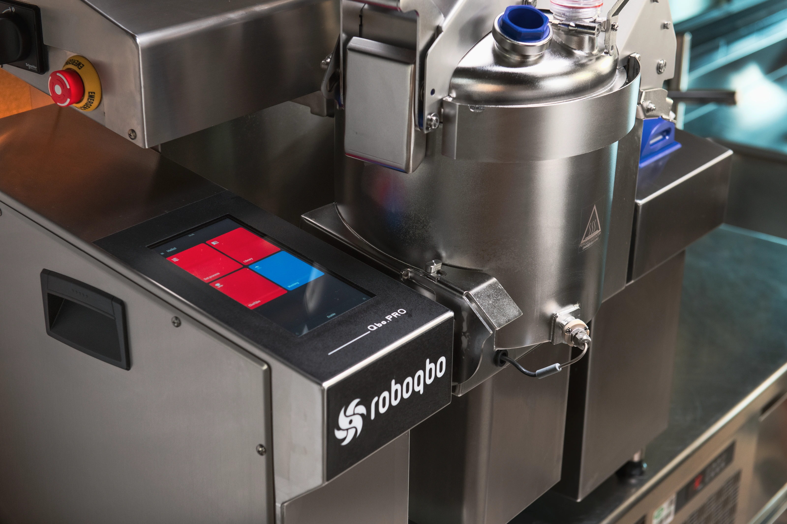
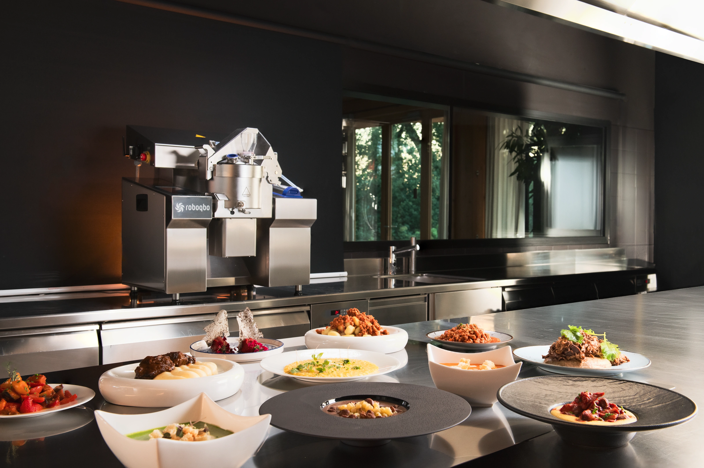

Prepara.
No se ha podido cargar el vídeo. Ver los equipos
Así
empieza.
El vídeo no está disponible. Puedes seguir explorando las imágenes.
Una cuba.
Mil ideas.
Cortar. Mezclar. Cocinar.



Misma receta.
Otro ritmo.
Vídeo del proceso · no representa el tiempo real de cocción.

Bechamel
Cocción y dedicación son dos medidas distintas; no se suman.
Cómo interpretar estos tiempos
Referencia publicada por Roboqbo para restauración. «Sin Qbo» es la comparación del fabricante, no una medición realizada por EMAPAN. La página de origen no detalla cantidad, modelo ni protocolo de prueba. Los resultados dependen de la receta, la carga y las condiciones de trabajo. El tiempo del chef forma parte del proceso; no debe sumarse a la cocción. Validaremos tu caso en una demostración.
Consultar la fuente oficial de RoboqboTu cocina sigue.
El vídeo no está disponible. Puedes seguir explorando las imágenes.
Del proceso
al plato.




¿Lo probamos
gratis?
Un chef profesional, Roboqbo y tus recetas.
Sin compromiso. Llámanos o envíanos un mensaje.